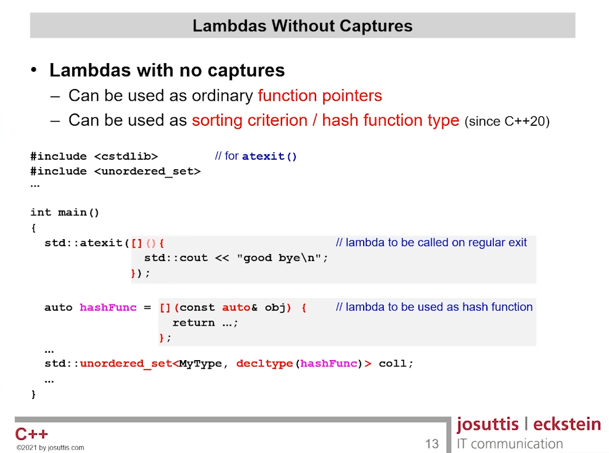

Getting to know lambdas in C++
Getting to know lambdas in C++#
\(\lambda\)s in C++: Nameless functions serving sweet syntactic sugar — just enough to give your codebase diabetes.
Introduction#
A lambda is an unnamed function that is useful (in actual programming, not theory) for short snippets of code that are impossible to reuse and are not worth naming.
See https://stackoverflow.com/a/7627330
Lambda Syntax#
1[ captureClause ] ( parameterClause ) -> returnType
2{
3 statements;
4}
The parameter list can be empty if no parameters are required. parameterClause can also be omitted entirely unless a return type is specified.
1auto a = [](){return 3;};
2printf("%d\n", a());
3>> 3
4
5auto b = []{return 3;}; /** The parameter list omitted */
6printf("%d\n", b());
7>> 3
8
9auto c = []->int{return 3;};
10warning: lambda without a parameter clause is a C++23 extension [-Wc++23-extensions]
11 1 | auto c = []->int{return 3;};
12 | ^
13 | ()
14printf("%d\n", c());
15>> 3
16
17auto d = []()->int{return 3;};
18printf("%d\n", d());
19>> 3
Lambda Expressions#
Lambdas Reduce Boilerplate#
class Plus {
int value;
public:
Plus(int v) : value(v) {}
int operator()(int x) const {
return x + value;
}
};
auto plus = Plus(1);
assert(plus(42) == 43);
// turns into
auto plus = [value = 1](int x) { return x + value; };
assert(plus(42) == 43);
// Reference: Back to Basics: Lambdas from Scratch - Arthur O'Dwyer - CppCon 2019
Lambdas Without Captures#

Lambdas have 2 types of parameters:
Parameters for behaviour (The capture group)
Parameters when they are called
Generic Lambdas (C++14) may call arguments of generic type. (
auto,const auto&)What the actual fcuk is this piece of code
1void f(int, const int (&)[2] = {}) {} // #1
2void f(const int&, const int (&)[1]) {} // #2
3// see entire code block at: https://en.cppreference.com/w/cpp/language/lambda
Lambdas are function object.#
have a “unique, unnamed non-union class type” – closure type
Examples:
// Example: 1
auto add = [](int x, int y) -> int {
return x + y;
}
// has effect of
class lambda??? { // closure type, compiler decides the name
public:
lambda???(); // only callable by the compiler before C++20
int operator() (int x, int y) const {
return x + y;
}
}
auto add = lambda???();
// example taken from Back to Basics: Lambdas - Nicolai Josuttis - CppCon 2021
// Example: 2
while(...) {
int min, max;
...
p = std::find_if(col1.begin(), col1.end(),
[min, max](int i) {
return min <= i <= max;
});
}
// has effect of
class lambda??? {
private:
int min_, max_;
public:
lambda???(int min, int max) // only callable by the compiler
: _min(min), _max(max) {
}
int operator() (int x, int y) const {
return x + y;
}
}
while(...) {
int min, max;
...
p = std::find_if(col1.begin(), col1.end(),
lambda???{min, max});
}
// example taken from Back to Basics: Lambdas - Nicolai Josuttis - CppCon 2021
// Example: 3
auto plus = [] (auto x, auto y) {
return x + y;
}
// Usage
int i = 42;
double d = plus(7.7,i);
std::string s{"Hi"};
std::cout << plus("s: ", s);
// manually would look like this (but no need to do it this way)
plus.operator()<double, int>(7.7, i);
// has effect of
class lambda??? {
public:
lambda???(); // only callable bu the compiler before C++20
template<typename T1, typename T2>
auto operator() (T1 x, T2 y) const {
return x + y;
}
}
auto plus = lambda???();
// example taken from Back to Basics: Lambdas - Nicolai Josuttis - CppCon 2021
Generic lambda (function object) is different from the templated (generic) function.#
// Function object with generic `operator()` method
auto printLmbd = [](auto& col1) {
for (const auto& elem: col1) {
std::cout << elem << '\n';
}
};
// Function template (generic before the call)
template<typename T>
void printFunc(const T& col1) {
for (const auto& elem: col1) {
std::cout << elem << '\n';
}
}
// usage
std::vector<int> v;
...
printFunc(v);
printLmbd(v);
printFunc<std::string>("hello"); // OK
printLmbd<std::string>("hello"); // Error
call(printFunc, v); // Error
call(printFunc<decltype(v)>, v); // OK
call(printLmbd, v); // OK
Initializer in lambda capture (since C++14)#
1auto price = [disc = getDiscount(cust)] (auto item) {
2 return getPrice(item) * disc;
3}
Lambdas are stateless by default – Not allowed to modify local copies from captured by value#
mutablemakes them stateful (modification allowed)
auto changed = [prev = 0] (auto val) {
bool changed = prev!=val;
prev = val; // Error: prev is read-only copy
return changed;
}
auto changed = [prev = 0] (auto val) mutable {
bool changed = prev!=val;
prev = val; // OK due to mutable
return changed;
}
std::vector<int> col1{7, 42, 42, 0, 3, 3, 7};
std::copy_if(col1.begin(), col1.end(),
std::ostream_iterator<int>{std::cout, ""},
changed);
// Output: 7, 42, 0, 3, 7
std::copy_if(col1.begin(), col1.end(),
std::ostream_iterator<int>{std::cout, ""},
changed);
// calling it again will not cause the 7 to removed.
// standard algorithms takes callables by value,
// so next call is operated over a copy of changed
// Ref: Back to Basics: Lambdas - Nicolai Josuttis - CppCon 2021
Per-lambda Mutable State (Wrong Approach)#
auto counter = []() { static int i; return ++i; };
// This closure behaves like following class type:
class Counter {
// No captured data members
public:
int operator()() const {
static int i;
return ++i;
}
};
// example from Back to Basics: Lambdas from Scratch - Arthur O'Dwyer - CppCon 2019
There is just one static variable i, shared by all callers of Counter::operator()()!
Lambda capture behaviour
[=]vs[g=g]
1int g = 10;
2
3auto kitten = [=]() { return g + 1; }; // Implicit capture by value
4auto cat = [g = g]() { return g + 1; }; // Explicit capture by value (copy of g)
5
6int main() {
7 g = 20;
8
9 printf("%d %d\n", kitten(), cat()); // Output: 21 11
10}
11// example from Back to Basics: Lambdas from Scratch - Arthur O'Dwyer - CppCon 2019
Never use
[=]i.e. capture all by value. You might accidentally capture a vector of strings!!Also see slides 18…24 of Back to Basics: Lambdas from Scratch - Arthur O’Dwyer - CppCon 2019 on different ways of capturing a variable
Variadic Lambdas reduce boilerplate#
class Plus {
int value;
public:
Plus(int v);
template<class... As>
auto operator()(As... as) {
return sum(as..., value);
}
};
auto plus = Plus(1);
assert(plus(42, 3.14, 1) == 47.14);
// turns into
auto plus = [value = 1](auto... as) {
return sum(as..., value);
};
assert(plus(42, 3.14, 1) == 47.14);
// Reference: Back to Basics: Lambdas from Scratch - Arthur O'Dwyer - CppCon 2019
Comments